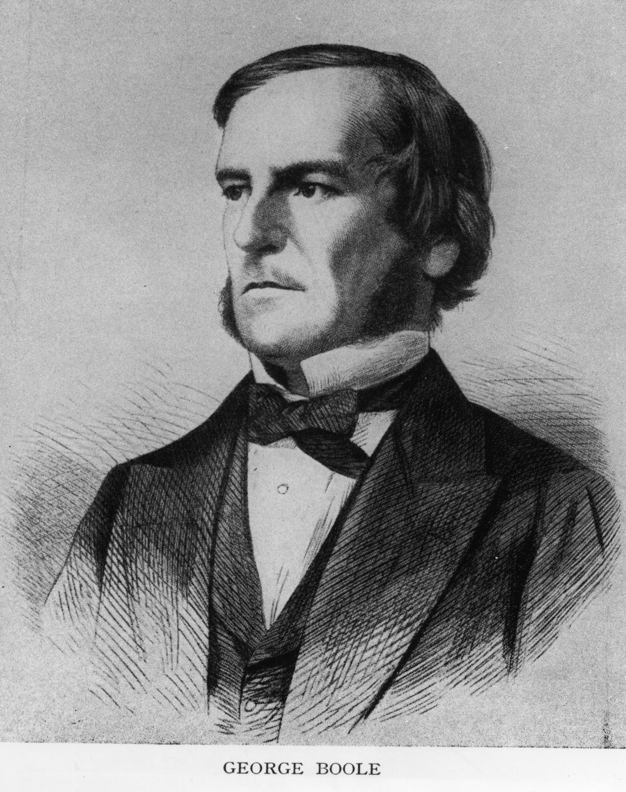
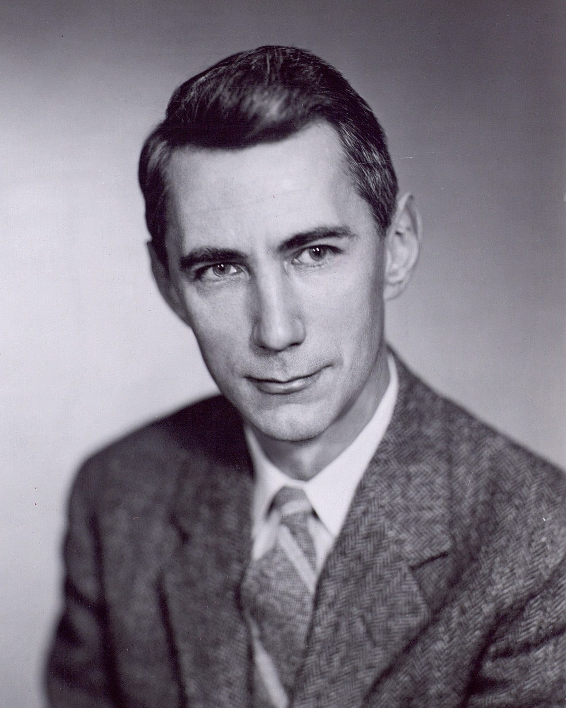
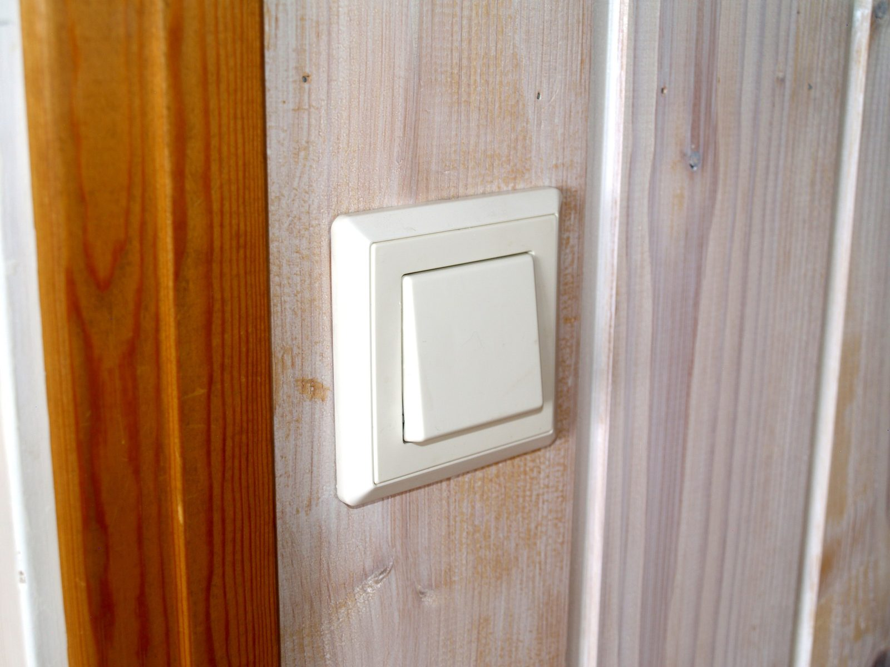
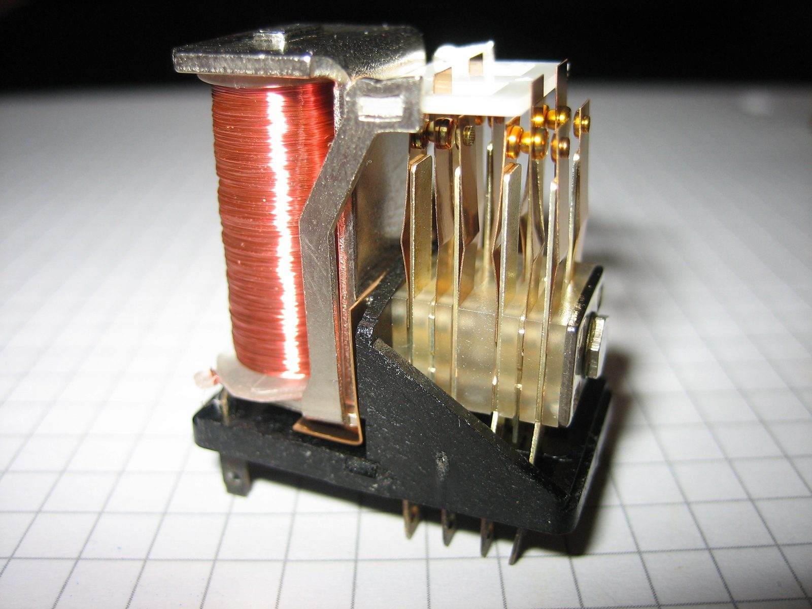

Unit 1 · Lesson 4
Switches that think
A light switch is the most important invention in this course. By the end of this chapter you will know why.
The story
George Boole was the son of a shoemaker in Lincoln, England. His family was not rich, and he never went to university. He taught himself languages and mathematics while he helped to support his family.


In 1849 he became the first professor of mathematics at Queen's College, Cork, in Ireland. In 1854 he wrote a book, The Laws of Thought. In it he wrote thinking as algebra (maths with letters), with only two values, TRUE and FALSE, and three small words: AND, OR, NOT.
For about eighty years, engineers did not use Boole's idea. Then, in 1937, a 21-year-old student at MIT, Claude Shannon, looked at the switches in telephone exchanges. He saw that they behaved exactly like Boole's algebra. So switches could do logic, and logic could calculate.


Shannon's work has been called the most important master's thesis of the century. He grew up in Gaylord, a small town in Michigan. Boole had no degree; Shannon came from a small town. Talent is everywhere, but opportunity is not.
Today a phone chip holds tens of billions of tiny switches. Every one of them follows the same idea: on or off, 1 or 0, true or false.
The science
A circuit: battery, wire, switch, light
A circuit is a closed loop. A battery pushes an electric current through a wire, through a switch and through a small light called an LED (light-emitting diode). An LED needs a resistor: a part that limits the current, so the LED does not burn out. When the switch is closed, the loop is complete: the current flows and the light is on. When the switch is open, there is a gap: the current stops and the light is off.


One switch is one bit
A switch has only two states, so it can store one bit (the smallest piece of data). We agree: closed = 1, open = 0. Light on = 1, light off = 0. With two switches you have 4 combinations (00, 01, 10, 11). With three switches you have 8.
Two switches can decide: AND, OR, NOT
Series means one after the other, in a row: the current must pass both switches, so the light is on only when A AND B are closed. Parallel means side by side: the current can take either path, so the light is on when A OR B (or both) is closed. NOT does the opposite: a switch wired across the light makes a shortcut, so the light is on when the switch is open. A truth table lists every combination of inputs and its output.
A relay: a switch pressed by electricity
In a relay, a current in circuit A makes an electromagnet (a coil that becomes a magnet). The magnet pulls a metal contact, and this closes circuit B. So one circuit switches another, with no finger. Chains of relays did logic in telephone exchanges, in the Bombe and in the first computers.


Check now
Quick questions. You see the answer at once.
A closed switch stands for 1.
True or false?
Two switches are in series (in a row). When is the light on?
- when either switch is closed
- only when both switches are closed
- only when both switches are open
Two switches are in parallel (side by side): an OR gate. The truth table has 4 rows. In how many rows is the light on?
Try it
Click the switches to open and close them, and watch the truth table fill in. Start with switches in series, then try the other buttons: parallel, NOT and three switches.
Paper version
Truth tables (1 = closed / light on, 0 = open / light off). SERIES = AND: A B → light: 0 0 → 0 · 0 1 → 0 · 1 0 → 0 · 1 1 → 1. PARALLEL = OR: A B → light: 0 0 → 0 · 0 1 → 1 · 1 0 → 1 · 1 1 → 1. NOT: A → light: 0 → 1 · 1 → 0 (the closed switch is a shortcut, so the current skips the light). THREE SWITCHES = (A AND B) OR C: 000 → 0 · 001 → 1 · 010 → 0 · 011 → 1 · 100 → 0 · 101 → 1 · 110 → 1 · 111 → 1.
Your turn
Exercises
From ★☆☆ (easy) to ★★★ (hard). Use a hint if you are stuck.
-
Exercise 1 ★☆☆
In a simple circuit, which part pushes the current round the loop?
- the battery
- the switch
- the LED
-
Exercise 2 ★☆☆
An open switch lets the current flow.
True or false?
-
Exercise 3 ★☆☆
Match each way of wiring the switches to its gate.
- two switches in a row (series) — ?
- two switches side by side (parallel) — ?
- one switch that makes a shortcut across the light — ?
-
Exercise 4 ★★☆
Two switches give 4 combinations. How many combinations do three switches give?
-
Exercise 5 ★★☆
A bell must ring when someone opens the front door OR the back door. How do you wire the two door switches?
- in series (in a row)
- in parallel (side by side)
- with only one switch
-
Exercise 6 ★★☆
Put the steps of a relay in order.
- A current flows in circuit A.
- Circuit B is closed.
- The coil becomes a magnet.
- The light in circuit B goes on.
- The magnet pulls the metal contact.
-
Exercise 7 ★★★
In the three-switch circuit (A AND B) OR C, switch A is closed, B is open and C is open. The light is on.
True or false?
-
Exercise 8 ★★★
Why is a switch that electricity can press more powerful than a switch that a finger presses?
In one sentence
A switch is a bit; switches in a row or side by side do logic.
Words of the chapter
- circuit
- a closed loop: battery, wires, a switch and something that uses the current circuito
- switch
- a part that opens or closes a circuit interruttore
- bit
- one switch: 1 (closed) or 0 (open) bit
- series / parallel
- in a row / side by side in serie / in parallelo
- AND · OR · NOT
- logic gates: both, at least one, the opposite AND · OR · NOT (porte logiche)
- truth table
- a table with every input combination and its output tabella di verità
- relay
- a switch pressed by electricity, through a magnet relè
- LED
- a small light that needs little energy LED